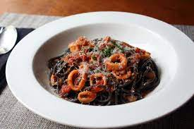

Calamari Marinara

Description
Calamari has an unfair reputation for being tricky to work with and that it's rubbery when cooked. Here's the secret: cook it in 45 seconds or 45 minutes--very quickly or a long slow simmer. For this marinara dish, I use the long simmer method.
Ingredients
- 2 tablespoons olive oil
- 1 yellow onion, sliced thin
- 1 serrano chile pepper, sliced thin
- 3 garlic cloves, crushed or minced
- 1 anchovy fillet
- 1/2 teaspoon red pepper flakes
- teaspoon kosher salt, plus more as needed
- 1 cup clam juice
- 6 cups crushed or pureed Italian plum tomatoes
- teaspoon dried oregano
- 2 pounds frozen calamari (tubes and tentacles), thawed, sliced into 1/2-inch pieces
- cup freshly chopped Italian parsley
- 1 tablespoon Freshly grated Parmigiano-Reggiano cheese
- 1 (16 ounce) package dry pasta
Steps
- Drizzle olive oil into saucepan (not over heat). Add onions, Serrano pepper, garlic, anchovy filet, red pepper flakes, and salt. Place pot over medium-high heat. When onions start to sizzle after a minute or so, stir and cook until onions and garlic just start to turn golden, 3 or 4 minutes. Stir in wine.
- Cook until wine is reduced by about half, 3 to 5 minutes. Add clam juice, tomatoes, and oregano. Bring to a simmer over medium-high heat. When sauce begins to bubble, reduce heat to medium-low. Simmer gently for about 15 minutes.
- Transfer calamari to sauce pot; stir gently. Simmer until calamari are tender, 35 to 45 minutes. Remove from heat. Stir in parsley.
- Bring a large pot of lightly salted water to a boil. Cook spaghetti in the boiling water, stirring occasionally until tender yet firm to the bite, about 12 minutes. Drain.
- Stir some sauce into the hot, drained pasta. Serve in warm bowls topped with more marinara sauce and grated cheese.